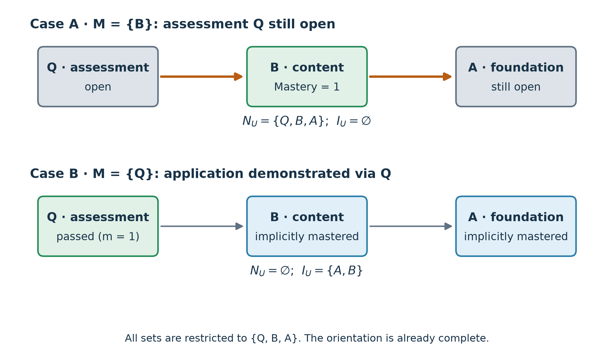
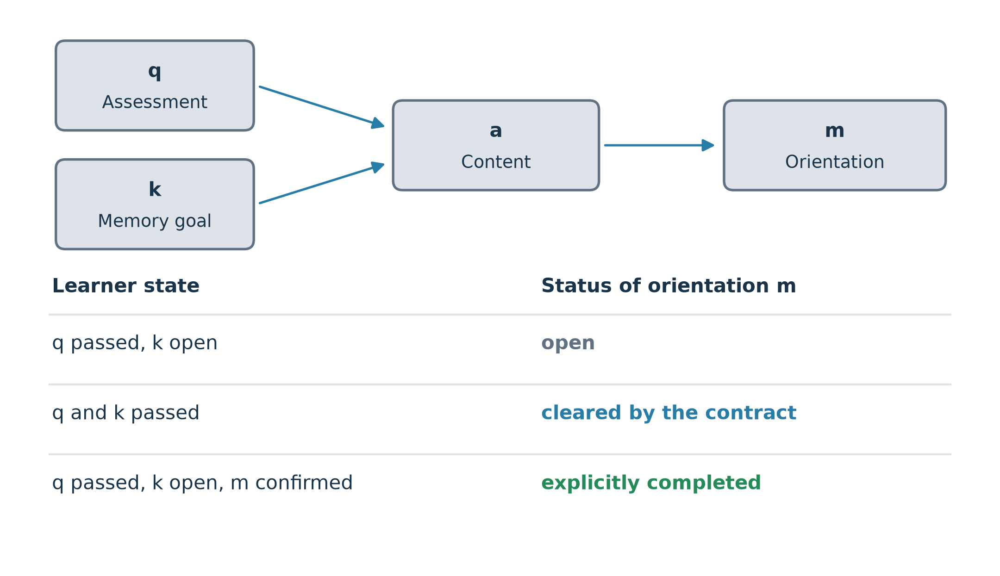
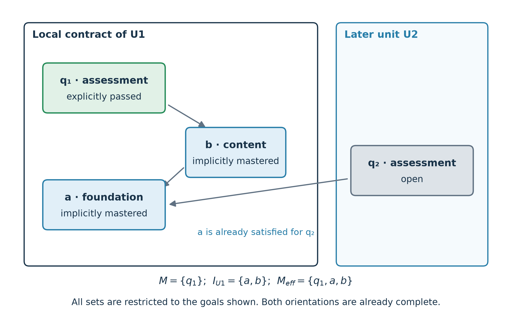
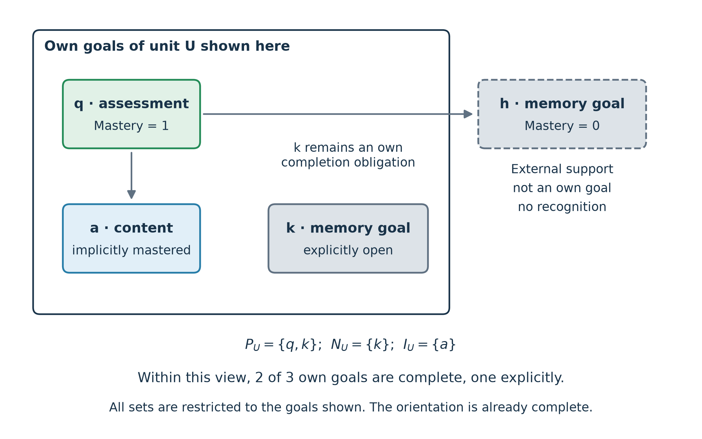
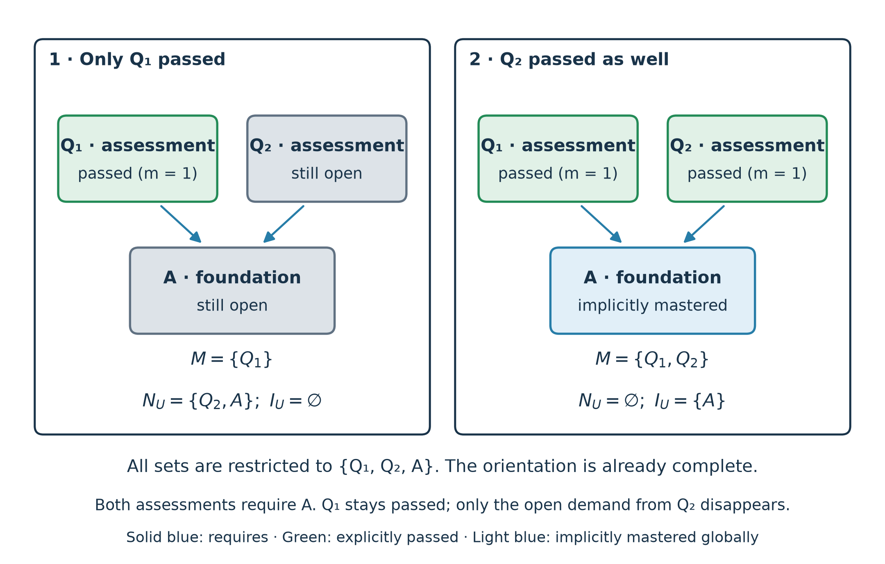
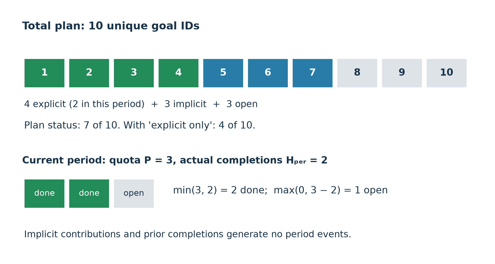

Assessment-Based Recognition and Proposed Unit Qualification (§13)
Generated artifact. Do not edit manually.
Generated by:
docs/concept/skill-graph/build_spec.pyRegenerate with:cd app && npm run docs:skill-graph:webSource of truth:docs/concept/skill-graph/source/
Language / Sprache: English (EN) · Deutsch (DE) | PDF: English PDF · Deutsches PDF
Compendium: §§1–5 Core · §§6–10 Context · §§11.1–11.4 Units · §11.5 Progression · §12 Planning · §13 Recognition and proposal · Appendices B–F · Appendix A (Rules & Ampel)
13. Implicit Mastery Through Valid Local Assessments
Applicable confirmed contract. The decisions of 4 and 11 November remain in force; the formulas and R1–R5 in this main section are not merely contract history. Their full technical enforcement is a separate matter. The unadopted proposal of 19 November follows in Section 13.7.
Binding Concept Revision of 4 November 2026
An explicit pass on a content goal establishes understanding. Passing a valid local assessment can establish independent application of the underlying competencies. That implicit mastery carries equal global weight: it satisfies subsequent prerequisites and counts toward cumulative attainment. Assessment and memory goals themselves remain strictly explicit.
Recognition depends on which assessments and memory goals in the goal's own unit remain open. The rule of 11 November 2026 applies only to contracts with reviewed subject-matter evidence (Section 13.3). An explicit outcome remains possible at any time. The concept specification defines global derivation. The stored binary value \(m\) remains the sole outcome per goal. Section 13.3 describes current enforcement.
13.1. Local Contract, Target Scope, and Protected Goal Types
Local contract.
A local recognition contract, also called an acquisition contract, belongs to a unit \(U\) with its own assessments (Section 11). It binds the canonical IDs of the unit's own goals \(\Own(U)\), the curriculum revision and the reviewed meaning of its own assessments. The unit declares their coverage in valid, complete coverageReviews (Section 11.2). Rules R1 to R5 also apply. Missing or invalid reviews violate the contract of a unit declared to have assessments. Stages, years, course phases and other units without their own assessment contract organize goals. Even when they contain standalone practice tasks or Abitur exams, they grant no recognition.
Total scope \(T(U)\) also contains the targets of child units. Each child's own contract governs recognition of its targets. A later synthesis assessment, a change of view or focus, or the selection of different plan roots cannot change that ownership. Support outside \(T(U)\) does not count toward full unit completion.
Protected goals.
Let \(Q \subseteq A\) denote the authoritatively classified assessment goals and \(A_{\mathrm{mem}} \subseteq A\) the memory goals, while \(K = G \setminus A\) remains the set of structural clusters. In the target model no prerequisite edge points to an assessment goal in \(Q\): assessments are endpoints in learning order and never prerequisites of later subject goals; in the opposite arrow direction of \(R\), this means \(R \cap (G \times Q)=\varnothing\). A unit's own protected goals are
Assessment goals require passing their own assessment, and memory goals require verified recall of their cards. The remaining unprotected own goals are content and orientation goals. Experimental content goals are also subject to R1 and R2. An individual atom has the same stated claim on both evidence routes: if it requires the learner’s own experiment, neither dialogue explanation nor analysis of supplied data demonstrates the whole atom. This introduces no extra experiment obligation for every unit. Deriving satisfaction of an orientation goal means only that the introduction is settled (Section 8.2).
Underlying relation.
All formulas below evaluate the fully inherited and atomically expanded prerequisite relation \(\Rat\) from Section 2.3, including hidden and cross-subject support. Every reference must resolve and the normalized relation must be acyclic; full prerequisite closure is evaluated prior to any display restriction.
13.2. Transitive Open Demand and Implicit Set
For any subset \(X \subseteq A\), let \(\operatorname{Reach}_{\Rat}^{*}(X)\) denote \(X\) itself together with every atom directly or transitively required by an element of \(X\):
Given global explicit mastery \(M = \{a \mid m(a) = 1\}\), define
Here \(N_U\) is open demand – the still-open protected goals of \(U\) together with their full atomic prerequisite demand – and \(I_U\) is the implicit set. An own goal belongs to \(I_U\) if and only if it is
- not already explicitly mastered,
- not protected, and
- no longer required by any open protected goal of the unit.
Reflexive reachability retains the open roots themselves together with all of their transitive prerequisites: traversal never stops at an explicitly mastered intermediate goal or at the boundary of \(\Own(U)\). Consequently, \(I_U\) remains invariant whenever a redundant shortcut edge is added or removed for required transitive minimality, and \(I_U \cap M = \varnothing\) as well as \(I_U \cap P_U = \varnothing\) hold unconditionally.
Figure 13 shows three goals \(S=\{\nd{Q},\nd{B},\nd{A}\}\). Orientation is already complete and lies outside the diagram. Assessment \(\nd{Q}\) requires \(\nd{B}\), which requires \(\nd{A}\). If only \(\nd{B}\) of the three has an explicit result, \(N_U\cap S=S\). Both content goals are still on the path from the open assessment. If only \(\nd{Q}\) of the three has been passed, that demand is gone. The valid contract recognizes \(\nd{B}\) and \(\nd{A}\).

Figure 13 — Transitive demand across an explicitly mastered intermediate goal: The sets are restricted to the three goals shown. The unit orientation is explicitly complete. Two independent starting states for \(\nd{Q}\to\nd{B}\to\nd{A}\): with \(M=\{\nd{B}\}\), \(\nd{A}\) remains open; with \(M=\{\nd{Q}\}\), \(\nd{Q}\) carries implicit application of \(\nd{A}\) and \(\nd{B}\). This is not a temporal sequence: an already explicitly mastered \(\nd{B}\) would stay in \(M\) when \(\nd{Q}\) is passed later. A direct edge \(\nd{Q}\to\nd{A}\) would be redundant.
What happens to the unit's motivation goal? In Figure 14, both the unit's assessment \(\nd{q}\) and its flashcard goal \(\nd{k}\) require content goal \(\nd{a}\), which requires the introduction \(\nd{m}\). A learner who takes and passes the assessment directly has an outcome for \(\nd{q}\). While \(\nd{k}\) is open, its demand still includes \(\nd{a}\) and \(\nd{m}\). If the learner also passes verified recall, the valid contract recognizes independent application of \(\nd{a}\). The introduction \(\nd{m}\) is settled even if no conversation took place. No outcome is recorded for \(\nd{m}\) through this derivation. A learner who experienced the introduction and said “continue” has an explicit outcome for \(\nd{m}\) even with an assessment or flashcard goal still open.

Figure 14 — When the orientation counts as complete: Three learner states under the same valid unit contract. Blue arrows point to prerequisites. While \(\nd{k}\) is open, it still needs \(\nd{m}\) through \(\nd{a}\). Once both protected goals have been passed explicitly, the contract clears \(\nd{m}\) by inference. A recorded outcome for \(\nd{m}\) requires the learner to have completed the orientation itself.
Complexity.
Let \(V_U^{\mathrm{reach}} = \operatorname{Reach}_{\Rat}^{*}(P_U \setminus M)\) denote the reachable atomic nodes and \(E_U^{\mathrm{reach}} = \{(a, b) \in \Rat \mid a \in V_U^{\mathrm{reach}}\}\) their outgoing prerequisite edges. Direct graph traversal visits each such node and edge at most once, computing \(I_U\) across \(\Own(U)\) in \(O(|\Own(U)| + |V_U^{\mathrm{reach}}| + |E_U^{\mathrm{reach}}|)\) steps – and globally in at most \(O(|A| + |\Rat|)\) – without materializing a quadratic transitive closure.
13.3. Why the Skill Graph Alone Does Not Prove Application
Table 8 gives the five conditions for establishing and applying a valid subject-matter contract.
Table 8: Conditions of the local recognition contract and their intended enforcement (decision of 11 November 2026).
| Rule | Requirement | Placement |
|---|---|---|
| R1 | Every own ordinary content goal lies on a prerequisite path from at least one own assessment of the unit, directly or transitively; a path that leads only to a memory goal does not count. | Validity condition of the unit definition, in the same class as acyclicity: hard from the first authored unit; a violating unit cannot be merged. |
| R2 | For every own content goal, a review establishes that the tasks and grading rubric of at least one own assessment demand independent application of that goal. That assessment requires the goal. | Assessment approval and coverage metadata at M5, with current per-goal evidence at M7. |
| R3 | An assessment claims coverage only for goals it requires directly or transitively: \(\operatorname{Cov}(q)\subseteq\{b\in A\mid(q,b)\in\Rat^+\}\). | As R1. |
| R4 / E1 | The smallest unit of a goal is unique in the resolved structure; own goals and child units derive from declared clusters. Content recognition uses the smallest responsible subject unit with assessments. | E1 is the structural contract; full rollout assigns every content goal to a unit with assessments. |
| R5 | A later re-cut of units or later edges never grant additional recognition to existing results; the contract is versioned. | Runtime contract; precondition before implicit recognition is enabled in production. |
R4 becomes tree rule E1 in the target model (Section 11.5). The existing 1.2 contract still describes explicit own placements for the three existing units. Their migration is scheduled in F8 to F11.
Structural conditions (R1, R3, R4).
The formula applies to all own goals under the valid contract without a separate eligibility mask. Each own content goal needs reviewed evidence of application. A content goal with no downstream assessment and a goal that prepares only for flashcard recall violate R1. Explicit mastery remains possible for both.
\(\operatorname{Cov}(q)\) contains the content goals whose independent application assessment \(q\) verifiably requires. By R3, each own goal in this set remains in \(N_U\) while the assessment is open. A missing path calls for subject review. An existing indirect path suffices.
Content condition (R2).
Independent subject review examines the task, solution, grading rubric and claimed coverage together. If a learner can pass solely on points for other work, the assessment does not establish the omitted competence. The review must consider every combination of passed assessments that releases a goal under the set formula. A title, an entry in coveredGoalIds, a requires path or a formally valid points allocation cannot by itself supply this evidence.
The motivation goal can lie on the same prerequisite path. It represents an introduction to the topic. The assessment claims no competence coverage for that goal. Missing coverage for a content goal, however, violates the contract. The ordinary binary assessment outcome carries its stated evidential meaning only under valid R1 to R4. A software update or a revised diagram cannot extend the meaning of a historical pass. R5 governs later changes (Section 13.4).
Current enforcement.
Required curriculum CI for the canonical Gymnasium subjects checks the declared units with validateLearningUnits.ts (validate:learning-units). The validator reads goal types, prerequisites and coveredGoalIds. Errors in R1, R3, unique ownership (R4), declarations, own goals, total scope or hierarchy fail the check. Full assignment of all acquisition goals is required only for learningUnitCoverage: "complete". No landscape currently claims this status.
For R2, the validator checks declared coverageReviews against the tasks and rubrics and reports goals without a review. A missing review currently triggers neither a structural error nor an R2 gate at M5 or M7. The reference calculation checks the set equations against shared conformance cases in required CI. Global revision-bound derivation, including R5, is not yet implemented on the main branch.
13.4. Global Effectiveness and Durable Contract Binding
Let \(\mathcal U_{\mathrm{valid}}\) denote the authoritative local contracts durably bound to this learner at their applicable revisions – rather than arbitrary visited views or all latest content revisions:
That union is not restricted to currently displayed learning units or the active Personal Curriculum view: contract identity, revision, and evidential meaning must remain evaluable across scope changes. Derivation always runs directly from explicit outcomes \(M\) and valid contracts without feeding previously derived implicit sets back as explicit mastery inputs.
A later learning unit \(\nd{U2}\) carrying another assessment \(\nd{q_2}\) must never reopen an application competence \(\nd{a}\) already established under \(\nd{U1}\) (Figure 15); instead, \(\nd{a}\) satisfies \(\nd{q_2}\)'s prerequisite. Under a fixed contract set, adding explicit mastery can only enlarge \(\Meff\): open protected roots shrink, their transitive demand contracts, and any newly explicitly mastered goal leaving \(I_U\) stays inside \(\Meff\) via \(M\).

Figure 15 — Local recognition remains globally effective for later learning units: Both orientations are explicitly complete. The sets shown include only the depicted content and assessment goals. \(\nd{U1}\) recognizes \(\nd{a}\) and \(\nd{b}\) under its own valid contract. The open later assessment \(\nd{q_2}\) does not block that recognition. Switching focus or plans does not erase the still-evaluable contract of \(\nd{U1}\).
A stable assessment goal ID binds a stable recognition meaning, and equivalent task variants must uphold that same qualified contract. Expanded recognition claims must never silently upgrade legacy exam passes: they require either a new assessment identity or an explicitly reviewed meaning-preserving migration, without adding per-learner qualification records. Whenever historical evidential meaning is unresolved, the explicit pass stands without fabricating broader application recognition, and genuine score or content corrections remain distinct from ordinary downstream consumer or plan switches.
R5 applies directly when introducing motivation goals. If an existing unit gains an introduction later, a historical assessment pass cannot retroactively settle that new introduction. Production use of global derivation requires a durable binding to the applicable contract revision.
13.5. Protected Goals and Full Unit Completion
Recognition is not yet full completion.
Full unit completion follows recursively from Equation (10): all own goals must be satisfied and every required child unit must be complete. Given global \(\Meff\), that condition coincides with \(T(U) \subseteq \Meff\) provided every required child obligation is represented inside \(T(U)\), and full completion always entails \(P_U \subseteq M\) on own protected goals.
Once every own assessment and memory goal of \(U\) is passed, \(N_U = \varnothing\), allowing \(U\)'s valid local contract to complete its own unprotected goals. Completion of required child units never follows from that fact alone: a parent synthesis assessment may stay open while child content competencies are already globally recognized, and conversely passing the parent synthesis never satisfies an open child assessment or memory obligation.
Open protected goals in the same contract.
An open own memory goal blocks full unit completion without blocking implicit recognition of another own content goal that it does not transitively require (Figure 16). Whenever an open memory goal does require a content goal directly or transitively, however, that content goal stays in open demand. Likewise, when multiple assessments inside the same local contract share a common foundation, all of them must be passed before that foundation leaves open demand.

Figure 16 — Protected memory goals and external support: The unit orientation is explicitly complete. Sets and counts in the diagram refer to the goals shown. Assessment \(\nd{q}\) is explicitly passed and carries application of \(\nd{a}\). The independent memory goal \(\nd{k}\) remains open and blocks full unit completion. External support \(\nd{h}\) outside \(\Own(U)\) receives no recognition.
Figure 17 shows two assessments of the same unit with a common foundation. After the first pass, the second still requires that foundation. Demand ends in this example only after the second pass.

Figure 17 — Two local assessments sharing a common foundation: The sets cover the three goals shown. The unit orientation is explicitly complete in both cases. \(\nd{Q_1}\) and \(\nd{Q_2}\) both require \(\nd{A}\) in the same valid local contract. After \(\nd{Q_1}\) alone, \(\nd{A}\) stays in open demand because \(\nd{Q_2}\) is still open. Only after both assessments are passed does \(\nd{A}\) become implicitly mastered globally. The explicit pass of \(\nd{Q_1}\) is preserved; there are no further protected goals here.
A later assessment in another unit has its own contract (Figure 15). The scope of each contract needs independent justification and subject review.
Assessment access.
Even with the introduction open, a learner can deliberately select an available assessment in their scope and attempt it directly (Section 8.4). Authentication and session ownership are required. B9 of 14 November 2026 supersedes the earlier open access profile (Section 11.5). In the target model ordinary learning access uses \(\Meff\), transitive prerequisites and the normal and strict focus rules.
13.6. Cumulative Attainment and Dated Period Events
For a fixed named plan target set \(T_{\mathrm{Plan}}\), cumulative plan attainment counts the effectively mastered goals of the plan:
Forming the union \(\Meff\) prior to intersecting with \(T_{\mathrm{Plan}}\) prevents double-counting across explicit outcomes, implicit sets, and overlapping contracts; any dedicated explicit-only view must label its distinct counter clearly.
By contrast, an active schedule period counts solely dated explicit completion events under its event contract: newly derived application recognition, prior mastery brought into the course, or a widened plan display never fabricates an extra dated completion event inside the current period (Figure 18).

Figure 18 — Total plan progress and dated period completions: Total plan progress and period completions use distinct counters. In the example, 7 of 10 planned goals are effectively mastered (4 explicit and 3 implicit). The current period counts only the 2 dated explicit completions against its quota of 3 goals. The three implicit contributions raise cumulative progress without fabricating dated explicit completion events inside the current period.
The unified learning-plan status contract specifies the user-facing surfaces. Static contract definitions may be cached per revision while derived sets remain computed projections rather than a second stored truth, and invalid or unresolved contracts stay visibly unavailable. Automated checks of these formulas replace neither independent content review nor human learner testing or instructional effectiveness studies.
Sources: Assessment-Gated Completion and Implicit Mastery; Completion Semantics Clarification of 4 November 2026; Unified Learning-Plan Status Contract.
13.7. Proposal of 19 November: what completing a unit could demonstrate
Proposal for expert review, 19 November 2026. Passing the stated final assessments demonstrates the named unit at its stated level. This judgement may rest on representative performances. It does not claim that every included detail was assessed individually. Support with such a detail may still be needed after valid completion.
A judgement about the unit, separate statements about individual goals
Unit completion, actual individual evidence and justified release of prerequisites for subsequent planning remain distinguishable. A skipped learning step receives no invented success. Required work on the demonstrated route nevertheless ends.
This is the unadopted proposal of 19 November 2026. The applicable derivation of global atomic mastery from absent outstanding demand remains in the main text (Sections 13.2 and 13.4). The local Hessian G8 and G9 Physics E.1 preview explicitly enables the versioned unit-assessment contract. The pilot is disabled by default. It covers six reviewed views. Rules R1–R5 remain binding. All four tasks have independent subject reviews. The product owner’s first pedagogical acceptance of the unit is pending.
Proposal: Completion contract, scope and actual evidence
The completion contract of a declared subject unit binds its identity, learning promise, level, version and required evidence. It lists all own required exams and required children, plus separate flashcard recall or real performance where necessary. Full completion follows from this evidence under Equation (11); membership of a goal in the cluster is insufficient.
Before a direct attempt, the learner sees which parts jointly constitute completion. The standard is the same as after working through. A previously passed part that remains valid counts towards completion. Where completion supports only a narrower promise, that promise must be visible before the assessment. The Land, course profile and level must not be silently exchanged in the evidence.
Exam identity. Each independent required exam needs its own valid pass. A shared title or pooled points account does not replace these passes. A task with a broader claim or changed qualifying rubric needs a new exam identity. This does not upgrade old results. Equivalent versions may carry the same meaning where their task and assessment demonstrably preserve that claim.
Proposed required evidence. Performing an own experiment is an additional unit-completion obligation only where the contract expressly declares it. An actually required experiment or verified flashcard recall is recorded only when performed. The same atom has the same subject standard on both routes: where its text requires own performance, an explicit individual outcome in dialogue requires corresponding evidence too. Merely explaining or analysing supplied data is insufficient. Passing a written analysis creates no performance event for an experiment. Practice cards and preparatory tasks may be omitted on the direct route where they are not stated required evidence. Exams remain endpoints of the learning route; their results are not attached as subject requires edges to later content goals.
Proposal: Why the graph and a points total are insufficient
Assessment design begins with a question: What independent performance would convince us to entrust someone with a task at this level? Task, solution and rubric must jointly support this judgement. Representative means a justified selection; passing must not allow indispensable concepts to be bypassed entirely.
The independent subject review examines the complete goal list. For each goal it records which performance is required to pass, which part remains open and why the overall judgement can tolerate that gap. Direct subject connections beyond the unit deserve particular attention. If someone can pass while entirely misunderstanding a concept essential to the next step, the unit needs a different task, an indispensable criterion or a narrower promise. A central synthesis goal without an outgoing connection can also be indispensable.
The review also examines the planning effect for each whole atom claimed. A requires path identifies preparation needs; it proves neither observed performance nor sufficient assessment breadth. coveredGoalIds, a title and a formally valid allocation of points do not constitute subject approval either. Releasing other atoms requires full unit completion. The review must justify which indispensable performances in the required package support the entire claim of each atom.
A compensatory rubric can undermine the overall judgement: the existing exam “Multi-phase motion and model testing” requires 18 of 30 points to pass. Even without the seven points for acceleration phases, 23 points remain attainable. Passing this exam alone therefore cannot assert indispensable acceleration competence. The E.1 discussion document shows how the allocation of points can protect the core performance in each of two separate assessments.
How many tasks support a reliable judgement requires subject and empirical investigation. No fixed minimum for every subject is established here. Subject reviews, automated consistency checks and learner trials provide different evidence. Agreement between the coaches used must be tested against concrete submissions with expected judgements concealed; it does not replace subject judgement.
Proposal: Trial example: Hesse, Physics E.1
The proposed promise is: I can use measurement data to decide when a velocity is approximately constant and when it changes. I can use this to predict motion, including simultaneous uniform and accelerated motion. For this learning promise, the Hessian G8 and G9 E.1 contract requires four exams. The section also offers the fifth exam on horizontal projectile motion as a voluntary additional assessment.
Table 9: Four required exam passes for Hessian E.1 completion.
| Required part | Own evidence and claim |
|---|---|
| Child · Modelling vertical projectile motion with constant acceleration | Hessian version, pass mark 17 out of 20. Supports modelling, axis choice and idealisation in particular. |
| Child · Acceleration report: velocity, position and model limits | Hessian version, pass mark 17 out of 20. Requires constructed diagrams and distinguishing displacement from distance after a reversal, among other things. |
| Own part A · cart | Pass mark 14 out of 17. Passing requires a model supported by the early and late motion and a quantitative arrival prediction that accounts for the reading limits. |
| Own part B · horizontal projectile | Pass mark 15 out of 18. Both motion models need support from the data. A determinate landing position follows from the shared flight time. |
The E.1 qualification requires all four passes. Each passed part counts through its own record for the specified task and rubric version. A and B and the two Hessian child exams are available in German and English. The existing multi-phase motion and horizontal projectile tasks served as source material.
What A and B demonstrate and what remains open.
A · cart allows minor errors in an otherwise sound prediction. Evidence for a change on the final stretch, both bounds and the full distinction between measurement deviations comes from individual contributions. B · horizontal projectile assesses the models against both data series and uses them in a coupled prediction. Each assessment has its own additive pass mark. The child assessments retain their separately bound rubrics.
The decisive boundary case: convincingly analysing supplied fall data does not mean the learner has performed their own falling experiment. Likewise, a fitting quadratic numerical pattern without physical interpretation does not replace the required understanding of acceleration. The proposed completion can therefore support the learning promise while the full experimental individual goal remains open.
The discussion document gives both tasks and the previous blind comparisons. The independent review of partial credit checks the current thresholds. The data are constructed. Repeated blind scoring by the coaches actually used and trials with learners remain open for this revision.
Proposal: Planning release and stable result meaning
Standard in the proposal. Planning concerns the full canonical claim of a required atom. The same standard applies to an explicit outcome \(M\) from dialogue and assessment release \(F_{\mathrm{plan}}\); assessment demands no stronger evidence for the same atom. Where application at this breadth was required to pass the bound evidence and has received subject approval, the learning plan can build on it. Requiring only a part is insufficient for general release. Representative evidence of unit completion alone does not answer this question.
Proposed release rule. Let \(M\) be the actually demonstrated atomic goals, \(A_{\mathrm{content}}\) the ordinary content atoms and \(\mathcal V\) the fully demonstrated valid units with their respective bound revisions \((U,\rho)\). The subject-reviewed release set \(P_{U,\rho}\) contains exclusively own ordinary atoms of that unit and revision. Here \(\Own_{\rho}(U)\) denotes the goals owned in that version. For the proposal:
A Physics exam can use a Mathematics atom but cannot release it on behalf of the Mathematics unit. Parent completion likewise releases no child atoms. A child unit contributes its own reviewed atoms only upon its own valid pass, even while its parent remains open. An individual exam part creates no additional release before its responsible unit is fully completed. Only in the proposal, regular prerequisite checking uses:
The complete direct and transitive prerequisite closure remains decisive, respecting normal and strict focus. The formula creates no new mastery set: \(F_{\mathrm{plan}}\) remains a planning justification distinguishable from \(M\). Release does not record an actually required performance or required recall as having occurred. Nor does it create a second completion event.
Table 10: Planning effect after the proposed four-part E.1 evidence.
| Whole content atom | Planning effect and limitation |
|---|---|
| Uniformly accelerated motion and acceleration (child) | Released through both child exams, including initial values, reversals, diagrams and signed areas. B alone does not support this whole claim. |
| Modelling and idealising motion (child) | Released through the child unit; A also awards credit for the limit of a concrete prediction. |
| Distinguishing measurement deviations and error types | Open. Full A4 evidence distinguishes scatter from a possible offset. How averaging or calibration affects them remains unassessed. |
| Stating measurement uncertainties | Open. A2 uses a supplied reading limit. Choosing a suitable uncertainty from measurement conditions remains unassessed. |
| Uniform motion and velocity | Open: A assesses model prediction, not the atom's full experimental and graphical claim. |
| Investigating motion with diagrams | Open: child diagrams do not replace independently recording motion experimentally. |
| Distinguishing average and instantaneous velocity | Open: comparing secant and tangent slopes is not required. |
| Investigating free fall experimentally | Open: B supplies data; an own experiment is not required. |
| Reference frames and velocity superposition | Open: another reference frame and general vector superposition remain unassessed. |
| Analysing horizontal projectile motion | Open: an own experiment and the x-y trajectory diagram are not required performances. |
| Evaluating safe distances in road traffic | Open: none of the four exams requires this judgement. An additionally scheduled own acquisition assignment remains open. |
For the first two rows, the E.1 contract uses the reviewed coverage from the child unit contract. For the two measurement goals, a subject review of A2 and A4 identifies what a passing submission can leave unassessed. For E.1, learners analyse supplied data. An individual experimental goal requiring an investigation of their own stays open until they demonstrate that performance. This applies to both \(M\) and \(F_{\mathrm{plan}}\).
After all four assessments, two of the eleven content goals are released for planning. Both releases come from the child unit. Nine goals need further evidence if the plan is to build on them. Five of these are direct prerequisites for eight distinct ordinary physics goals outside E.1. For example, oblique projectile motion requires the whole horizontal projectile goal. A learner demonstrating an individual goal in dialogue must also meet its full requirements. A practical assessment is available for an independent free-fall investigation.
When release takes effect. The vertical throw assessment provides full evidence for modelling and idealisation. Under the proposal, the plan can use that goal through the child unit once the learner has also passed its second assessment, the acceleration log. This can happen before A and B. Existing individual evidence in \(M\) counts immediately. The rule of 11 November can recognise an own atom once all local exam or recall obligations relevant to that atom have been fulfilled.
Open alternative. A separately declared, revision-bound subunit could release a goal of its own earlier if subject review confirmed that passing it requires the whole goal. Both measurement goals in the current cart task would remain open even with an earlier trigger. The proposal uses full completion of the responsible unit.
The version, subject scope and planning effect remain durably bound to the underlying success. A focus change, new parent unit, additional edges or a broader new assessment claim never expand an old result. Suitable earlier evidence remains traceable across plan changes. A justified correction to results or content must be distinguished from such a retrospective expansion.
Proposal: Open prerequisites and required individual evidence
A completed unit route can coexist with open individual assignments. An own assignment is fulfilled when its specified evidence exists or subject-appropriate release supports its entire claim. Where real performance or independent recall is explicitly prescribed, that performance remains required. A merely skipped exercise within the completed route is not carried forward as a backlog.
Where a later goal needs an open atom, the backend tells the coach the need and its reason: for example “fall model analysed; own experiment not demonstrated” or “interval velocity used; instantaneous velocity open”. Deliberately choosing an entry unit does not remove this gap globally. It creates no success in other units either.
Open decision: short check or supported application. For a directly required ordinary prerequisite whose necessary application has neither been demonstrated individually nor evidenced at the full required breadth by the passed version, a targeted short check could come first. The discussion document instead proposes offering entry with a note and observing application in the new task. If difficulties arise, the coach explains and practises the missing step. This local entry decision replaces no required evidence and does not release the atom globally. A binding decision and the corresponding backend information remain outstanding.
When application is observed, only the active goal receives an outcome. The open prerequisite may reappear at a later step. A learner seeking durable evidence can choose the prerequisite as the active goal, demonstrate the specified performance and return to the original task. An incidental observation carries no lasting credit.
Open decision: replacing a child obligation for the parent route. A parent assessment might support a narrower, differently worded overall completion even though individual child obligations have not been taken. A subject review would have to approve the claimed overall standard and the children's indispensable contributions explicitly. Until such a decision, all required parts apply; the E.1 example requires four. Such an exception must not fabricate child completion, real performance or flashcard recall.
Proposal: Learning plan, cumulative progress and dated period events
The learning plan distinguishes at least three statements: unit demonstrated by assessment, scheduled activities fully worked through, and outstanding own acquisition assignments. The learner can thus recognise completion of a route while seeing which individually unassessed claims remain open for another route. Cumulative progress needs a named scope and visible counting method.
Product Owner decision for the E.1 pilot, 20 November 2026. When the learner explicitly chooses E.1 qualification as an assignment, passing the four designated versions A–D ends its required work. That assignment then has no further required next step. Individually open skills remain available voluntarily or count towards another explicitly chosen assignment. An additional free-fall experiment retains its own evidence requirement. Existing atomic plans retain their stated scope. A historical part receipt without the planning-release binding at grading counts towards that part. The cockpit and coach explain why the two individual goals remain open. A green check on the learning map marks a goal the learner demonstrated directly. The same check in gray marks credit supported by evidence from other work. Ending an obligation alone gives the goal no check mark.
A unit counter such as “2 of 3 required units demonstrated” is meaningful only for a fully structured scope. Where units are only partly declared, goal counters remain necessary for the other areas. Both counting methods must not be merged into one percentage without a stated denominator. Likewise, the number of released prerequisites must not appear as the number of goals actually worked through.
In the weekly workload, the real exam success counts once under its event contract. The derived unit display, multiple released atoms and later display of prior work create no further completion events. Evidence earned outside the current period remains earlier performance. New independent assessment attempts and retakes need an explicitly specified event contract; recalculating a display is insufficient.
Current practice permits repeating a known task even after viewing its solution. This remains useful when working through. For a new qualifying demonstration, an equivalent version unfamiliar to the learner is proposed. Where model choice is assessed, merely changing numbers while retaining the identical solution route is insufficient. This new quality rule is not implemented; until a suitable version exists, the known task can remain available for practice. Previously stored successes remain valid.
Proposal: Boundary with atomic recognition in force
The applicable decisions of 4 and 11 November use outstanding demand \(N_U\), the own implicit set \(I_U\) and their global union \(\Meff\). Their operative formulas and R1–R5 remain in Sections 13.2 through 13.6. The motivation draft of 17 November is a separate proposal. The following changes to trigger and effect dated 19 November have not been adopted.
R2 still supplies the subject-matter standard for releasing an individual atom. The task and rubric must make its full application essential to passing. The trigger and consequence change. Under the earlier model demand for an atom could cease before unit completion. In this unadopted proposal only a fully demonstrated unit activates a reviewed release for later prerequisites. The unit can pass while entire individual goals remain open.
The applicable atomic recognition model has its own checks. validateLearningUnits.ts checks the applicable unit contract, including structure, R1, R3 and own ownership. The reference evaluation checks the applicable set equations; fully global revision-bound derivation under R5 is not yet implemented. Under its current contract, the backend evaluation can treat ordinary goals as done within scope when outstanding demand disappears, without an exam having been passed. None of these mechanisms evidences the unit performance proposed here.
In the E.1 pilot, two passed assessments bound to the review in effect at grading can together cover two named prerequisites for planning. All four parts demonstrate the unit. The dedicated setting skillpilot.completion.unit-assessment-pilot-enabled defaults to false. Enabling the pilot adds the unit display and makes its planning credits available to the learning plan, frontier and coach. Grading creates the receipt for that version. The credit creates neither individual mastery receipts nor an additional completion event. Pedagogical acceptance and adoption as a general rule are pending.
Sources: Discussion document of 19 November; Child contract for accelerated motion; Historical product decisions; Unified learning-plan status contract.